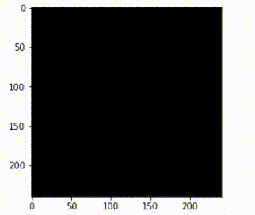

Our project originally planned on using 3D MRI scans (.mha files) to build a 3D CNN model to make predictions. However, due to the incredibly large size of our input data we were not able to efficiently perform the heavy computation required to train the model. Despite trying to pare down our data by only analyzing the middle slice of an mri as a two dimensional image, we found that we were very likely to miss important features contained in the remaining slices, and ultimately, our model accuracy left a lot to be desired.
While our 2D model performed relatively well on our dataset, with three dimensions worth of data in a typical MRI it is hard to ignore the potential room for improvement. In the future, we would hope to retry and test our 3D CNN using hardware and/or cloud computing services that are up to the task.